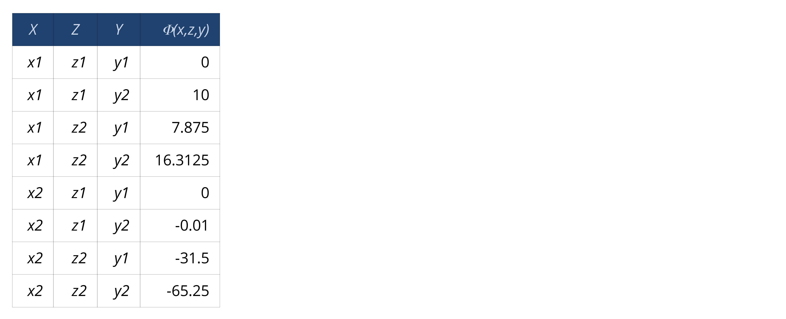
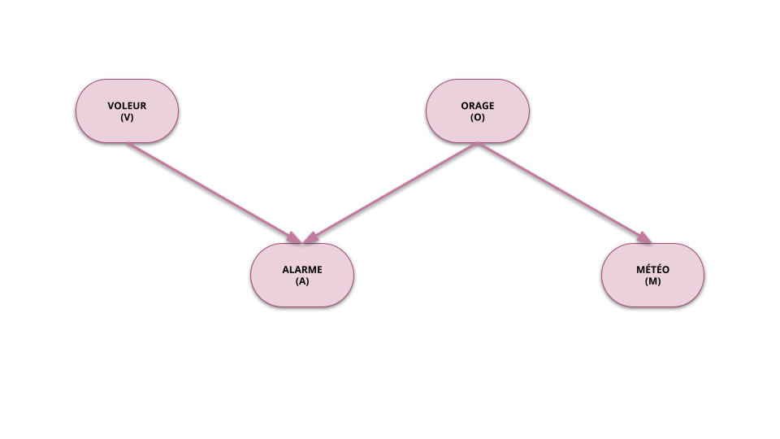
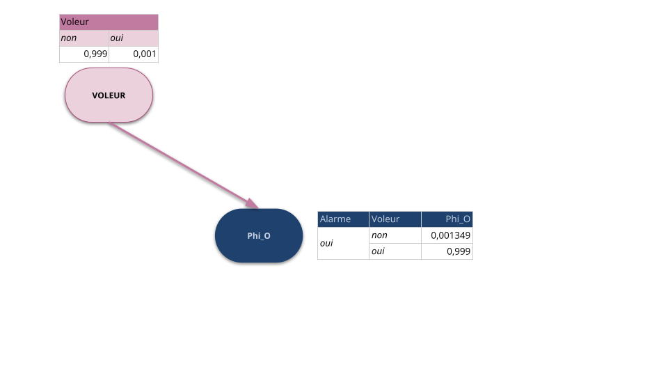

Modélisation stochastique et approche bayésienne
Inférence probabiliste
Roland Donat
Spécialité Cyber Data
Objectifs de la séance
- Comprendre la notion d'inférence probabiliste dans un réseau bayésien
- Maîtriser les calculs effectués par un algorithme d'inférence exacte
- Introduire la notion de complexité dans le cadre des réseaux bayésiens
- Prendre conscience des avantages et des limites de l'inférence dans les réseaux bayésiens
Introduction à l'inférence probabiliste

Introduction à l'inférence probabiliste

Introduction à l'inférence probabiliste

Introduction à l'inférence probabiliste

Introduction à l'inférence probabiliste
Définition
- Soit un RB représentant la loi jointe d'une suite de v.a. \(\boldsymbol{X} = \lrpar{X_{1}, \ldots, X_{n}}\) à valeurs dans \(\mathcal{X}_{1}, \ldots, \mathcal{X}_{n}\) respectivement
- Objectif : calculer les lois de la forme \[ \Prob\lrPar{\boldsymbol{Q}|\boldsymbol{E} = \boldsymbol{e}} \]
- \(\boldsymbol{Q} = \lrpar{Q_{1},\ldots,Q_{\ell}} \subseteq \boldsymbol{X}\) est une suite de v.a. appelée "requête" de l'inférence
- \(\boldsymbol{E} = \lrpar{E_{1},\ldots,E_{m}} \subseteq \boldsymbol{X}\) est une suite de v.a., observées aux valeurs \(\boldsymbol{e} = \lrpar{e_{1},\ldots, e_{m}}\), appelée "évidence" de l'inférence
- Contrainte : \(\boldsymbol{Q} \inter \boldsymbol{E} = \varnothing\)
Introduction à l'inférence probabiliste
Inférence exacte
- Algorithme belief propagation (Pearl, J., 1988) adapté aux structures d'arbres (ou polyarbres)
- Méthodes reposant sur la construction de l'arbre de jonction (Lauritzen, S. L. and Spiegelhalter, D. J., 1988)
- Méthodes d'élimination des variables (Cozman, Fabio G., 2000, Dechter, R., 1999)
Inférence approchée déterministe
- Algorithme loopy belief propagation (Murphy, K. P. and Weiss, Y. and Jordan, M. I., 1999) : Utilisation de la méthode belief propagation sur un graphe général
- Méthode de raisonnement par pertinence (Lin, Yan and Druzdzel, Marek J., 1999)
Inférence approchée stochastique
- Méthode d'échantillonnage type Monte-Carlo
Notion de potentiel
Notion de potentiel
Caractéristiques d'un potentiel
- \(\Dom\lrPar{\Phi} = \set{\mathcal{X},\mathcal{Y},\mathcal{Z}}\) avec :
- \(\mathcal{X} = \set{x_{1},x_{2}}\)
- \(\mathcal{Y} = \set{y_{1},y_{2},y_{3}}\)
- \(\mathcal{Z} = \set{z_{1},z_{2}}\)
- Configurations de \(\Phi\) : \(\Dom\lrPar{\Phi}^{*} = \set{x_{1},x_{2}} \times \set{y_{1},y_{2},y_{3}} \times \set{z_{1},z_{2}}\)
- \(\Phi\) possède \(|\Dom\lrPar{\Phi}^{*}| = |\mathcal{X}| \times |\mathcal{Y}| \times |\mathcal{Z}| = 2 \times 3 \times 2 = 12\) configurations
- Pour toute configuration \((x,y,z) \in \mathcal{X} \times \mathcal{Y} \times \mathcal{Z}\), \(\Phi\) prend la valeur \(\Phi\lrPar{x,y,z}\)
Notion de potentiel
Concept général
- Un potentiel est une application de plusieurs variables à valeurs dans un ensemble quelconque et muni d'opérations particulières
- L'ensemble des potentiels est muni d'opérations particulières
- Les potentiels définis dans ce cours sont des cas particuliers de tenseurs
Potentiel discret et fini réel
Soit \(\mathcal{X}_{1}, \ldots, \mathcal{X}_{D}\) une famille d'ensembles discrets et finis. \(\Phi\) est un potentiel réel sur le domaine \(\set{\mathcal{X}_{1}, \ldots, \mathcal{X}_{D}}\) si \(\Phi\) est une application définie par
\begin{equation*} \Phi : \left\lbrace \begin{array}{ccc} \mathcal{X}_{1} \times \ldots \times \mathcal{X}_{D} & \mapsto & \mathbb{R} \\ \lrPar{x_{1}, \ldots, x_{D}} & \mapsto & \Phi\lrPar{x_{1},\ldots,x_{D}} \end{array} \right.. \end{equation*}
Vocabulaire et notations
- Le domaine du potentiel \(\Phi\) est noté \(\Dom\lrPar{\Phi} = \set{\mathcal{X}_{1}, \ldots, \mathcal{X}_{D}}\)
- \(\Dom\lrPar{\Phi}^{*} = \prod_{d = 1}^{D} \mathcal{X}_{d} = \mathcal{X}_{1} \times \ldots \times \mathcal{X}_{D}\) (produit cartésien des ensembles \(\mathcal{X}_{d}\))
- Tout élément \(\lrpar{x_{1},\ldots,x_{D}} \in \Dom\lrPar{\Phi}^{*}\) est appelé configuration
- Si \(|\Dom\lrpar{\Phi}| = D\), on dit que \(\Phi\) est un potentiel à \(D\) dimensions
Notion de potentiel
Notion de potentiel
Notion de potentiel
Notion de potentiel
Notion de potentiel
Notion de potentiel
Notion de potentiel
Notion de potentiel
Notion de potentiel
Notion de potentiel
Notion de potentiel
Notion de potentiel
Produit de deux potentiels discrets et finis
- Soient deux potentiels réels discrets et finis \(\Phi_{1}\) et \(\Phi_{2}\)
- Notons :
- \(\mathbfcal{X} = \Dom\lrPar{\Phi_{1}} \setminus \Dom\lrPar{\Phi_{2}}\)
- \(\mathbfcal{Y} = \Dom\lrPar{\Phi_{2}} \setminus \Dom\lrPar{\Phi_{1}}\)
- \(\mathbfcal{Z} = \Dom\lrPar{\Phi_{1}} \inter \Dom\lrPar{\Phi_{2}}\)
Le produit de \(\Phi_{1}\) et \(\Phi_{2}\) est un potentiel \(\Psi = \Phi_{1} \cdot \Phi_{2}\) de domaine \(\Dom\lrPar{\Psi} = \Dom\lrPar{\Phi_{1}} \union \Dom\lrPar{\Phi_{2}}\) vérifiant pour toute configuration \((\mbf{x},\mbf{z},\mbf{y}) \in \mathbfcal{X}^{*} \times \mathbfcal{Z}^{*} \times \mathbfcal{Y}^{*}\) :
\begin{equation*} \Psi\lrpar{\mbf{x},\mbf{z},\mbf{y}} = \Phi_{1}\lrpar{\mbf{x},\mbf{z}} \cdot \Phi_{2}\lrpar{\mbf{z},\mbf{y}} \end{equation*}
Notion de potentiel
Notion de potentiel
Notion de potentiel
Notion de potentiel
Notion de potentiel
Notion de potentiel
Notion de potentiel
Notion de potentiel
Notion de potentiel
Notion de potentiel
Sommation/Marginalisation d'un potentiel discret et fini
- Soit un potentiel réel discret et fini \(\Phi\)
Le résultat de la sommation de \(\Phi\) sur le domaine \(\mathbfcal{W}\) est un potentiel \(\Psi = \sum_{\mathbfcal{W}} \Phi\) de domaine \(\Dom\lrPar{\Psi} = \Dom\lrPar{\Phi} \sm \mathbfcal{W}\) vérifiant pour toute configuration \(\mbf{x} \in \Dom\lrPar{\Psi}^{*}\):
\begin{equation*} \Psi\lrpar{\mbf{x}} = \sum_{\mbf{w} \in \mathbfcal{W}} \Phi\lrpar{\mbf{x},\mbf{w}} \end{equation*}- Cette opération est également appelée marginalisation du potentiel \(\Phi\) sur le domaine \(\Dom\lrPar{\Phi} \sm \mathbfcal{W}\)
Notion de potentiel

Notion de potentiel
Notion de potentiel

Notion de potentiel
Notion de potentiel
Notion de potentiel
Instanciation d'un potentiel discret et fini
- Soit un potentiel réel discret et fini \(\Phi\)
- L'instanciation de \(\Phi\) sur la configuration \(\mbf{y} \in \mathbfcal{Y} \subseteq \Dom\lrPar{\Phi}\) est la projection du potentiel \(\Phi\) sur le domaine \(\Dom\lrPar{\Phi_{\mbf{y}}} = \lrPar{\Dom\lrPar{\Phi} \sm \mathbfcal{Y}} \union \mbf{y}\)
- \(\Phi\) instancié sur \(\mbf{y}\) est un potentiel défini sur toutes les configurations \(\mbf{x} \in \lrPar{\Dom\lrPar{\Phi} \sm \mathbfcal{Y}}^{*}\) tel que \(\Phi\lrpar{\mbf{x},\mbf{y}}\)
Les LPC : des potentiels particuliers
Retour sur la LPC de la variable Alarme
- Variable normalisée :
- Alarme : à valeurs dans \(\set{\text{non},\text{oui}}\)
- Variables de conditionnement :
- Voleur : à valeurs dans \(\set{\text{non},\text{oui}}\)
- Orage : à valeurs dans \(\set{\text{non}, \text{faible},\text{fort}}\)
Les LPC : des potentiels particuliers
Retour sur la LPC de la variable Alarme
- Variable normalisée :
- Alarme : à valeurs dans \(\set{\text{non},\text{oui}}\)
- Variables de conditionnement :
- Voleur : à valeurs dans \(\set{\text{non},\text{oui}}\)
- Orage : à valeurs dans \(\set{\text{non}, \text{faible},\text{fort}}\)
Les LPC : des potentiels particuliers
Potentiel et LPC
- Soit un potentiel réel discret et fini à valeur dans \([0,1]\) noté \(p\)
S'il existe deux sous-domaines disjoints \(\mathbfcal{X}\) et \(\mathbfcal{Y}\) avec \(\Dom\lrPar{p} = \mathbfcal{X} \union \mathbfcal{Y}\) tels que pour toute configuration \(\mbf{y} \in \mathbfcal{Y}^{*}\)
\begin{equation*} \sum_{\mbf{x} \in \mathbfcal{X}^{*}} p\lrpar{\mbf{x},\mbf{y}} = 1. \end{equation*}- Le potentiel \(p\) est une Loi de Probabilité Conditionnelle (LPC) sur \(\mathbfcal{X}\) conditionnellement à \(\mathbfcal{Y}\)
Vocabulaire
- Le domaine \(\mathbfcal{Y}\) est appelé domaine de conditionnement
- Le domaine \(\mathbfcal{X}\) est appelé domaine normalisé
Complexité
Complexité d'un potentiel
Complexité spatiale
- Soit un potentiel réel discret et fini \(\Phi\) tel que \(\Dom\lrPar{\Phi} = \set{\mathcal{X}_{1}, \ldots, \mathcal{X}_{D}}\)
- La complexité spatiale de \(\Phi\), notée \(\text{CS}\lrpar{\Phi}\), correspond au nombre de configurations du domaine de \(\Phi\) : \[ \text{CS}\lrpar{\Phi} = |\Dom\lrpar{\Phi}^{*}| \]
Conséquence
- \(\text{CS}\lrpar{\Phi} \simeq v^{D}\) quand \(v\) et/ou \(D\) sont grands avec :
- \(D\) : nombre de variables représenté dans le domaine du potentiel
- \(v = \max \set{|\mathcal{X}_{1}|, \ldots, |\mathcal{X}_{D}|}\) : Plus grand nombre de valeurs prises par une v.a.
Complexité algorithmique
- Soient deux potentiels réels discrets et finis \(\Phi_{1}\) et \(\Phi_{2}\), et \(\mathcal{T}\) un traitement à réaliser
- On note \(\text{CA}(\mathcal{T})\), la complexité algorithmique du traitement \(\mathcal{T}\)
- \(\text{CA}\lrpar{\Phi_{1} \cdot \Phi_{2}} \simeq \text{CS}\lrpar{\Phi_{1} \cdot \Phi_{2}} = |\lrpar{\Dom\lrpar{\Phi_{1}} \union \Dom\lrpar{\Phi_{2}}}^{*}|\)
- \(\text{CA}\lrpar{\sum_{\mathbfcal{W}}\Phi_{1}} \simeq \text{CS}\lrpar{\sum_{\mathbfcal{W}}\Phi_{1}} = |\lrpar{\Dom\lrpar{\Phi_{1}} \sm \mathbfcal{W}}^{*}|\)
- Les complexités algorithmiques et spatiales sont du même ordre
Complexité d'une LPC
Complexité spatiale d'une LPC discrète et finie
- Soient \(\boldsymbol{X} = X_{1},\ldots,X_{n}\) et \(\boldsymbol{Y} = Y_{1},\ldots,Y_{m}\) deux suites de v.a. à valeurs dans les ensembles discrets et finis \(\mathcal{X}_{1}, \ldots, \mathcal{X}_{n}\) et \(\mathcal{Y}_{1}, \ldots, \mathcal{Y}_{m}\)
- La complexité spatiale associée à la LPC \(P(X_{1},\ldots,X_{n}|Y_{1},\ldots,Y_{m}) = P(\boldsymbol{X}|\boldsymbol{Y})\), notée \(CS(P(\boldsymbol{X}|\boldsymbol{Y}))\), est définie par le nombre de configurations de valeurs différentes que peuvent prendre les v.a. \(X_{1},\ldots,X_{n}, Y_{1}, \ldots, Y_{m}\)
- Autrement dit : \[ CS(P(\boldsymbol{X}|\boldsymbol{Y})) = \prod_{i = 1}^{n} |\mathcal{X}_{i}| \prod_{j = 1}^{m} |\mathcal{Y}_{j}| \] où \(|\mathcal{X}_{i}|\) est le nombre d'éléments dans l'ensemble \(\mathcal{X}_{i}\)
Complexité d'une LPC

Exercice
- Donner les complexités spatiales des LPC du RB "Alarme"
Complexité d'une LPC
Complexité probabiliste d'une LPC discrète et finie
- Soient \(\boldsymbol{X} = X_{1},\ldots,X_{n}\) et \(\boldsymbol{Y} = Y_{1},\ldots,Y_{m}\) deux suites de v.a. à valeurs dans les ensembles discrets et finis \(\mathcal{X}_{1}, \ldots, \mathcal{X}_{n}\) et \(\mathcal{Y}_{1}, \ldots, \mathcal{Y}_{m}\)
- La complexité probabiliste associée à la LPC \(P(X_{1},\ldots,X_{n}|Y_{1},\ldots,Y_{m}) = P(\boldsymbol{X}|\boldsymbol{Y})\), notée \(CP(P(\boldsymbol{X}|\boldsymbol{Y}))\), est définie par le nombre de paramètres (probabilités) nécessaires pour définir la LPC
- Autrement dit : \[ CP(P(\boldsymbol{X}|\boldsymbol{Y})) = \prod_{i = 1}^{n} (|\mathcal{X}_{i}| - 1) \prod_{j = 1}^{m} |\mathcal{Y}_{j}| \]
- La CP tient simplement compte du fait qu'une LPC doit sommer à 1 pour chaque configuration des variables de conditionnement
- La CP mesure le potentiel de modélisation d'une loi (notion de degré de liberté)
Exercice
- Donner les complexités probabilistes des LPC du RB "Alarme"
Complexité d'un réseau bayésien
Complexité d'une loi jointe représentée par un RB
- Soit \(X_{1},\ldots,X_{n}\) une suite de v.a. à valeurs dans les ensembles discrets et finis \(\mathcal{X}_{1}, \ldots, \mathcal{X}_{n}\)
- La complexité spatiale (resp. probabiliste) d'une loi jointe factorisée dans un RB est définie comme étant la somme des complexités spatiales (resp. probabilistes) associées à chacune des LPC \(P(X_{i}|\text{pa}(X_{i}))\)
- La complexité spatiale du RB a pour expression : \[ CS(RB) = \sum_{i = 1}^{n} CS(P(X_{i}|\text{pa}(X_{i}))) = \sum_{i = 1}^{n} |\mathcal{X}_{i}| \times \prod_{\mathcal{X} \in \text{pa}(\mathcal{X}_{i})} |\mathcal{X}| \]
- La complexité probabiliste a pour expression : \[ CP(RB) = \sum_{i = 1}^{n} CP(P(X_{i}|\text{pa}(X_{i}))) = \sum_{i = 1}^{n} (|\mathcal{X}_{i}| - 1) \times \prod_{\mathcal{X} \in \text{pa}(\mathcal{X}_{i})} |\mathcal{X}| \]
Complexité d'un réseau bayésien
RB = Représentation parcimonieuse
- Un RB est une représentation compacte d'un processus aléatoire
- Moins il y a d'arcs dans le graphe :
- Plus des hypothèses d'indépendances conditionnelles entre les variables sont posées
- Plus le potentiel de modélisation, i.e. la capacité à représenter des phénomènes complexes, diminue (\(CP\) faible)
- Plus la représentation par RB est avantageuse du point de vue du stockage, du paramétrage et de la complexité calculatoire (\(CS\) faible)
Exercice
Calculer les complexités du modèle "Alarme" avec et sans RB
Méthode d'élimination des variables
Méthode d'élimination des variables
Hypothèses d'utilisation
- Méthode adaptée pour les réseaux bayésiens à variables discrètes et finies, i.e. les LPC sont des potentiels discrets et finis
- Si le phénomène étudié implique des variables continues et/ou non finies, il faut les discrétiser au préalable
Principe
- "Éliminer" par sommations successives toutes les variables de la loi jointe qui n'apparaissent pas dans le calcul à réaliser
- Simplifier le calcul à réaliser grâce à la propriété de factorisation des RB et choississant un "bon" ordre d'élimination des variables
- Algorithme de référence implémenté dans la plupart des outils de réseaux bayésiens
Méthode d'élimination des variables

Inférence dans le réseau bayésien Alarme
- La problématique fait intervenir 4 variables aléatoires : Voleur (\(V\)), Alarme (\(A\)), Orage (\(O\)), Info météo (\(M\))
- Le RB qui modélise la problématique permet de factoriser la loi jointe des variables aléatoire comme suit : \[ P(V,A,O,M) = P(V) \times P(A|V, O) \times P(O) \times P(M|O) \]
Méthode d'élimination des variables
Calcul de P(Voleur=oui|Alarme=oui)
- Par définition : \(\displaystyle P(V = \text{oui}|A = \text{oui}) = \frac{P(V = \text{oui}; A = \text{oui})}{P(A = \text{oui})}\)
Calcul du numérateur
- On instancie les variables de conditionnement à leur valeur demandée, ici \(A = \text{oui}\)
- Puis, on somme (élimine) les variables différentes de Voleur et Alarme : \[ P(V; A = \text{oui}) = \sum_{O \in \{\text{non}, \text{faible},\text{fort}\}} \sum_{M \in \{\text{non}, \text{oui}\}} P(V; A = \text{oui}; O;M) \]
- Pour simplifier les calculs, on utilisera la propriété de factorisation de la loi jointe dans le RB
Calcul du dénominateur
- On utilise le calcul du numérateur en marginalisant sur la variable Alarme : \[ P(A = \text{oui}) = \sum_{V \in \set{\text{non}; \text{oui}}} P(V; A = \text{oui}) \]
Méthode d'élimination des variables
Calcul du numérateur
On cherche à calculer :
\begin{equation*} P(V ; A) = \sum_{O \in \{\text{non}, \text{faible},\text{fort}\}} \sum_{M \in \{\text{non}, \text{oui}\}} P(V ; A ; O ; M) \end{equation*}
Méthode d'élimination des variables
Calcul du numérateur
D'après la propriété de factorisation de la jointe dans le RB :
\begin{equation*} P(V ; A) = \sum_{O \in \{\text{non}, \text{faible},\text{fort}\}} \sum_{M \in \{\text{non}, \text{oui}\}} P(V) \cdot P(A | V ; O) \cdot P(O) \cdot P(M|O) \end{equation*}
Méthode d'élimination des variables
Calcul du numérateur
On instancie les variables de conditionnement, ici \(A = \text{oui}\) :
\begin{equation*} P(V ; A = \text{oui}) = \sum_{O \in \{\text{non}, \text{faible},\text{fort}\}} \sum_{M \in \{\text{non}, \text{oui}\}} P(V) \cdot P(A = \text{oui} | V ; O) \cdot P(O) \cdot P(M|O) \end{equation*}
Méthode d'élimination des variables
Calcul du numérateur
On "élimine" successivement les variables \(M\) et \(O\) en distibuant les sommes dans la factorisation :
\begin{equation*} P(V ; A = \text{oui}) = P(V) \cdot \sum_{O \in \{\text{non}, \text{faible},\text{fort}\}} P(A = \text{oui} | V ; O) \cdot P(O) \cdot \sum_{M \in \{\text{non}, \text{oui}\}} P(M|O) \end{equation*}
Méthode d'élimination des variables

Calcul du numérateur
Sommation sur \(M\) : factorisation :
\begin{equation*} P(V ; A = \text{oui}) = P(V) \cdot \sum_{O \in \{\text{non}, \text{faible},\text{fort}\}} P(A = \text{oui} | V ; O) \cdot P(O) \cdot \underbrace{\sum_{M \in \{\text{non}, \text{oui}\}} P(M|O)}_{\text{potentiel composé de 1}} \end{equation*}- Le potentiel obtenu ne contient que des 1, on peut donc le supprimer du produit
Méthode d'élimination des variables
Calcul du numérateur
On fait le produit des potentiels/LPC qui dépendent de \(O\) : factorisation :
\begin{equation*} P(V ; A = \text{oui}) = P(V) \cdot \sum_{O \in \{\text{non}, \text{faible},\text{fort}\}} \underbrace{P(A = \text{oui} | V ; O) \cdot P(O)}_{\Psi_{O}(A = \text{oui} ; V ; O)} \end{equation*}
Méthode d'élimination des variables
Calcul du numérateur
On fait le produit des potentiels/LPC qui dépendent de \(O\) : factorisation :
\begin{equation*} P(V ; A = \text{oui}) = P(V) \cdot \sum_{O \in \{\text{non}, \text{faible},\text{fort}\}} \Psi_{O}(A = \text{oui} ; V ; O) \end{equation*}
Méthode d'élimination des variables

Calcul du numérateur
Puis on somme sur \(O\) pour "éliminer" cette variable : factorisation :
\begin{equation*} P(V ; A = \text{oui}) = P(V) \cdot \underbrace{\sum_{O \in \{\text{non}, \text{faible},\text{fort}\}} \Psi_{O}(A = \text{oui} ; V ; O)}_{\Phi_{O}(A = \text{oui} ; V)} \end{equation*}
Méthode d'élimination des variables
Calcul du numérateur
Il ne reste plus qu'à faire un dernier produit pour obtenir le numérateur
\begin{equation*} P(V ; A = \text{oui}) = P(V) \cdot \Phi_{O}(A = \text{oui} ; V) \end{equation*}
Méthode d'élimination des variables
Calcul final
- Numérateur : \(P(V = \text{oui}; A = \text{oui}) = 0.000999\)
- Dénominateur : \(P(A = \text{oui}) = P(V = \text{oui}; A = \text{oui}) + P(V = \text{non}; A = \text{oui}) = 0.002346651\)
- On en déduit : \(P(V = \text{oui}|A = \text{oui}) = \frac{0.000999}{0.002346651} = 0.4257130694\)
Méthode d'élimination des variables
Rappel de l'objectif
- Soit \(\mbf{X} = \lrpar{X_{1}, \ldots, X_{n}}\) une suite de v.a.
- Calculer \(\Prob\lrPar{\mbf{Q}|\mbf{E} = \mbf{e}}\) avec \(\mbf{Q} \subseteq \mbf{X}\), \(\mbf{E} \subseteq \mbf{X}\) et \(\mbf{Q} \inter \mbf{E} = \varnothing\)
Principe
- Par définition : \(\displaystyle \Prob\lrPar{\mbf{Q}|\mbf{E} = \mbf{e}} = \frac{\Prob\lrPar{\mbf{Q}, \mbf{E} = \mbf{e}}}{\Prob\lrPar{\mbf{E} = \mbf{e}}}\)
- En posant \(\mbf{W} = \mbf{X} \sm (\mbf{Q},\mbf{E})\), on a \[ \Prob\lrPar{\mbf{Q}, \mbf{E} = \mbf{e}} = \sum_{W \in \mbf{W}} \underbrace{\Prob\lrPar{X_{1},\ldots,X_{n}}}_{\text{loi jointe de la suite $\mbf{X}$}} = \sum_{W \in \mbf{W}} \Prob\lrPar{\mbf{Q},\mbf{W},\mbf{E} = \mbf{e}} \]
- Principe : Simplifier le calcul de \(\Prob\lrPar{\mbf{Q}|\mbf{E} = \mbf{e}}\) grâce à la propriété de factorisation dans un RB
- En pratique : Toutes les variables hors requête et évidence sont "éliminées" de l'expression de la loi jointe par sommation
Méthode d'élimination des variables
Complexité de l'algorithme
- On note \(\sigma : \{1, \ldots, D\} \mapsto \{1, \ldots, D\}\) l'ordre des variables à éliminer
- Pire cas : \((n - 1)\) variables à éliminer
- Opérations coûteuses : calcul des potentiels \(\Phi_{\sigma(i)}\) et \(\Psi_{\sigma(i)}\)
Complexité de l'algorithme :
\begin{align*} \text{CA}\lrPar{\text{AEV}} & \simeq \sum_{i} \text{CS}\lrPar{\Phi_{\sigma(i)}} + \text{CS}\lrPar{\Psi_{\sigma(i)}} \\ & \simeq n v_{\star}^{D_{\star}} \end{align*}- \(D_{\star}\) : Nombre de dimensions du plus gros potentiel \(\Phi_{\sigma(i)}\), noté \(\Phi_{\star}\)
- \(v_{\star}\) : Nombre de valeurs dans la plus grande dimension de \(\Phi_{\star}\)
- Risque d'explosion exponentielle
Inférence exacte dans un RB
- Il n'existe pas d'algorithme polynomial d'inférence exacte pour un RB quelconque
- Le calcul de probabilité dans un RB est un problème NP-difficile
Méthode d'élimination des variables
Propriétés
- L'ordre d'élimination des variables n'influe pas sur le résultat, i.e. tous les ordres aboutissent au même (bon) résultat
- En revanche, la rapidité des calculs est fortement liée à l'ordre d'élimination
Problématique
- Trouver un "bon" ordre consiste à rechercher un ordre qui limite la taille des \(\Phi_{\sigma(i)}\) à chaque élimination
- Malheureusement :
- Trouver l'ordre optimal est un problème NP-complet
- Même l'ordre optimal peut dans certains cas aboutir à une explosion combinatoire
- En pratique, on utilise des heuristiques ou des connaissances sur le graphe pour déterminer l'ordre d'élimination
Méthode d'élimination des variables
Stratégie 1 : Application d'une heuristique
- Utilisation d'un algorithme glouton muni d'une fonction de coût donnée
- À chaque étape, on élimine la variable qui minimise le coût
- Exemples de fonctions de coût :
- Nombre de voisins de la v.a. courante
- Complexité de \(\Phi_{\sigma(i)}\) engendré par l'élimination de la v.a. courante
Stratégie 2 : Exploiter sa connaissance du graphe
- Exemples de cas où cela peut être profitable :
- Graphes avec peu de variables mais avec des LPC de tailles très hétérogènes car cette situation peut piéger les méthodes gloutonnes
- Graphes très grands mais très structurés (e.g. modèle bayésien naïf)
Méthode d'élimination des variables
Quel ordre choisir ?
- Objectif : Calculer \(\Prob\lrPar{{\color{EMLogoOrange}X_{i}}}\)
- Option 1 : Élimination des \(X_{j}\), \(j \neq i\) et enfin élimination de \(Y\) ?
- Option 2 : Élimination de \(Y\), puis élimination des \(X_{j}\), \(j \neq i\) ?
Résumé de la séance
Points clés sur l'inférence
- Inférence dans un RB : Calculer des probabilités
- Inférence exacte : Problème NP-Difficile
- L'inférence dans RB discret et fini repose sur des sommes et des produits de potentiels
Points clés sur l'algorithme d'élimination
- Méthode d'inférence exacte
- Méthode simple et intuitive ne reposant pas sur la théorie des graphes
- Principe :
- Réduction de la loi jointe en propageant les évidences (ce que l'on sait)
- Élimination des variables hors requête et évidence par sommations successives
- Multiplication des potentiels restants à la fin de la procédure
- Normalisation du potentiel résultant afin d'obtenir la LPC recherchée
- Complexité de l'algorithme fortement dépendante de l'ordre d'élimination des variables
Merci pour votre attention !

Bibliographie
Cozman, Fabio G. (2000). Generalizing {Variable} {Elimination} in {Bayesian} {Networks}, Editora Tec Art.
Dechter, R. (1999). Bucket {Elimination}: {A} {Unifying} {Framework} for {Reasoning}, Artificial Intelligence.
Lauritzen, S. L. and Spiegelhalter, D. J. (1988). Local {Computations} with {Probabilities} on {Graphical} {Structures} and {Their} {Application} to {Expert} {Systems}, Journal of the Royal Statistical Society.
Lin, Yan and Druzdzel, Marek J. (1999). Relevance-based {Incremental} {Belief} {Updating} in {Bayesian} {Networks}, International Journal of Pattern Recognition and Artificial Intelligence.
Murphy, K. P. and Weiss, Y. and Jordan, M. I. (1999). Loopy {Belief} {Propagation} for {Approximate} {Inference}: {An} {Empirical} {Study}.
Pearl, J. (1988). Probabilistic {Reasoning} in {Intelligent} {Systems}: {Networks} of {Plausible} {Inference}, Morgan Kaufmann.
Algorithme d'élimination
- Entrées :
- LPC \(\set{\Prob\lrPar{X_{i}|\pa\lrpar{X_{i}}}}_{1\le i \le n}\) de la loi jointe factorisée des v.a. \(\mbf{X} = \lrpar{X_{1},\ldots,X_{n}}\)
- Une suite de v.a. de requête \(\mbf{Q} \subseteq \mbf{X}\)
- Une suite de v.a. \(\mbf{E} \subseteq \mbf{X}\), \(\mbf{Q} \inter \mbf{E} = \varnothing\)
- Une permutation \(\sigma\) des v.a. \(\lrpar{X_{1},\ldots,X_{n}}\) représentant l'ordre d'élimination des v.a}
- Sortie : La loi \(\Prob\lrpar{\mbf{Q}|\mbf{E}}\)
- Initialisation : Liste des potentiels à considérer \(\mathcal{P} \gets \set{\Prob\lrPar{X_{1}|\pa\lrpar{X_{1}}}, \ldots, \Prob\lrPar{X_{n}|\pa\lrpar{X_{n}}}}\)
- Pour tout \(i = 1, \ldots, n\) (Itération sur l'ordre d'élimination)
- Si \(X_{\sigma(i)} \in \mbf{W} = \mbf{X} \sm (\mbf{Q}, \mbf{E})\) (Vérification si la variable courante est à éliminer)
- \(\mathcal{B}_{\sigma(i)} \gets \set{\psi \in \mathcal{P} | X_a{\sigma(i)} \in \Dom\lrPar{\psi}}\) (Potentiels cibles dont le domaine contient la v.a. à éliminée)
- \(\mathcal{P} \gets \mathcal{P} \sm \mathcal{B}_{\sigma(d)}\) (Suppression des potentiels cibles de la liste de potentiels courante)
- \(\Phi_{\sigma(i)} \gets \prod_{\psi \in \mathcal{B}_{\sigma(i)}} \psi\) (Produit des potentiels cibles)
- \(\Psi_{\sigma(i)} \gets \sum_{X_{\sigma(i)}} \Phi_{\sigma(i)}\) (Élimination de la variable)
- \(\mathcal{P} \gets \mathcal{P} \union \set{\Psi_{\sigma(i)}}\) (Mise à jour de la liste des potentiels)
- Si \(X_{\sigma(i)} \in \mbf{W} = \mbf{X} \sm (\mbf{Q}, \mbf{E})\) (Vérification si la variable courante est à éliminer)
- \(\Prob\lrpar{\mbf{Q},\mbf{E}} \gets \prod_{\psi \in \mathcal{P}} \psi\)
- Déduction de \(\Prob\lrpar{\mbf{Q}|\mbf{E}}\) en normalisant \(\Prob\lrpar{\mbf{Q}|\mbf{E}}\) sur la suite de v.a. \(\mbf{Q}\)